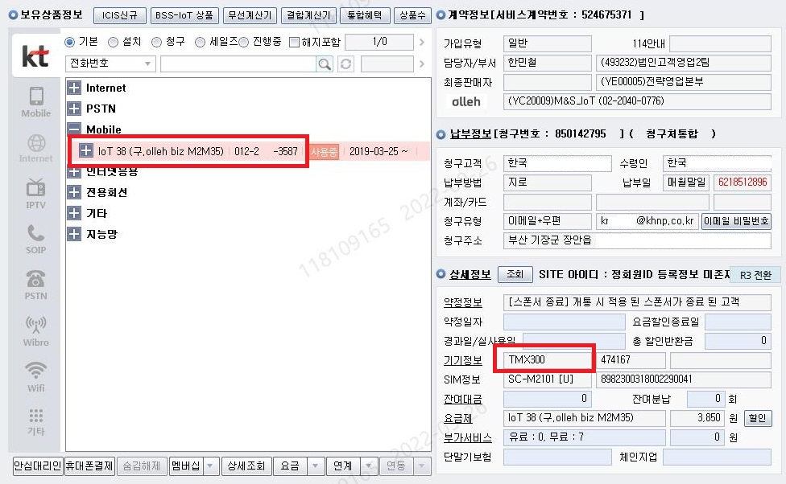

012 번호가 부여되어 있고, 모뎀형 단말기를 사용하는 것이 특징인데
http://www.stsbiz.co.kr/Product/sub2_1_1
TMZ300 단말은 위 링크로 단말 정보를 보시면 WCDMA 단말 (3G 장비) 입니다.
독거노인을 위한 응급장비가 3G로 운영되고, 품질문제 발생 시 엔지니어가 방문 가능한 것과 같이
위와 같은 엘레베이터 비상통화 장치도 신호점검이 필요한 경우 TT발행이 가능합니다.
통화품질팀으로 직접 인입이 되었을 때에는 기업 고객센터(1588-0114)로 호전환을 해주시면
됩니다. (M2M 장비임)
※대전이나 대구 같은 남부권 통화품질팀은 수도권 TT를 이관받기 때문에 해당 센터에서
최종 TT발행
